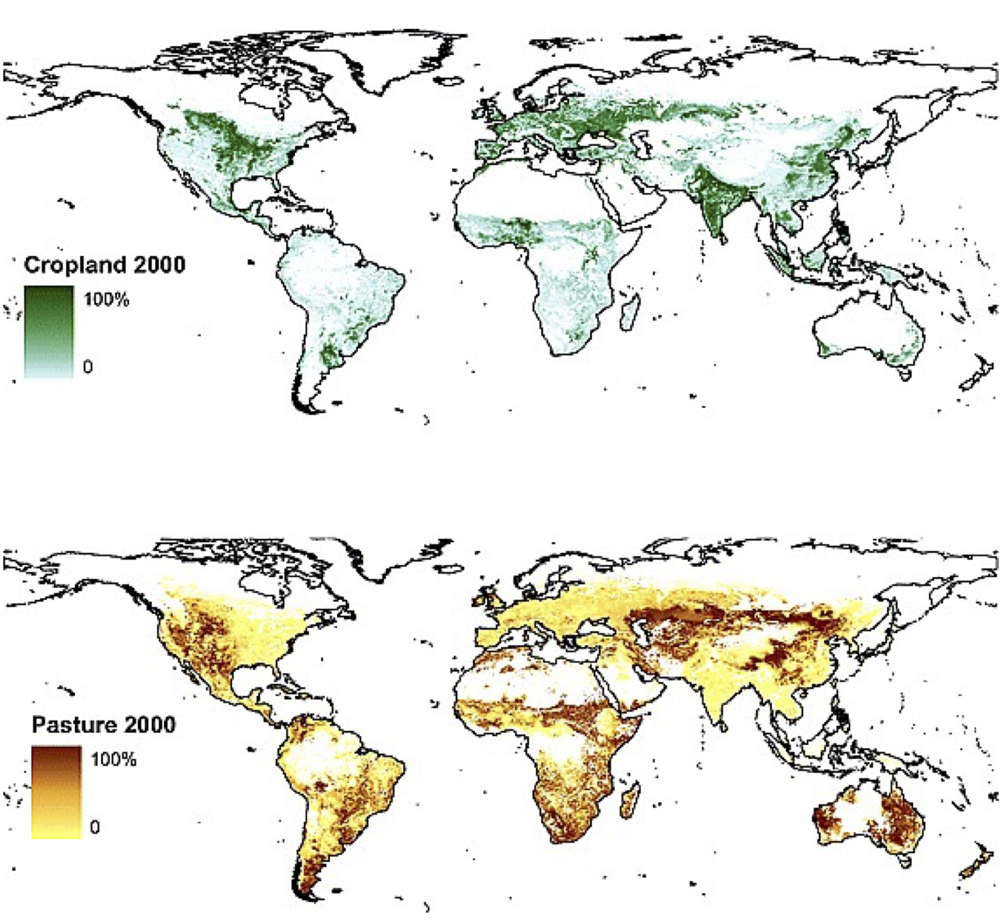
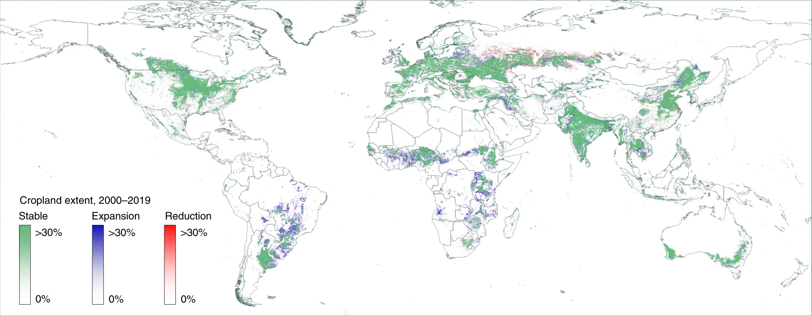
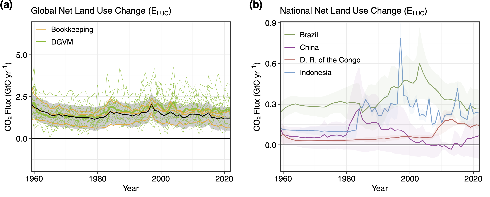
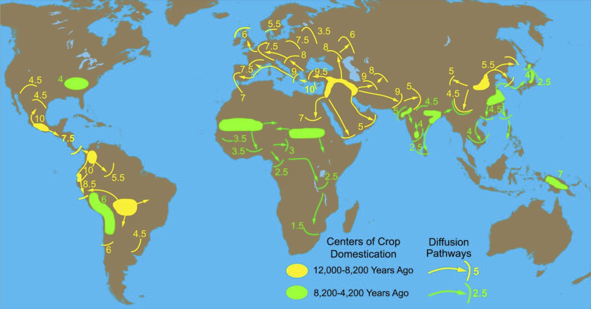
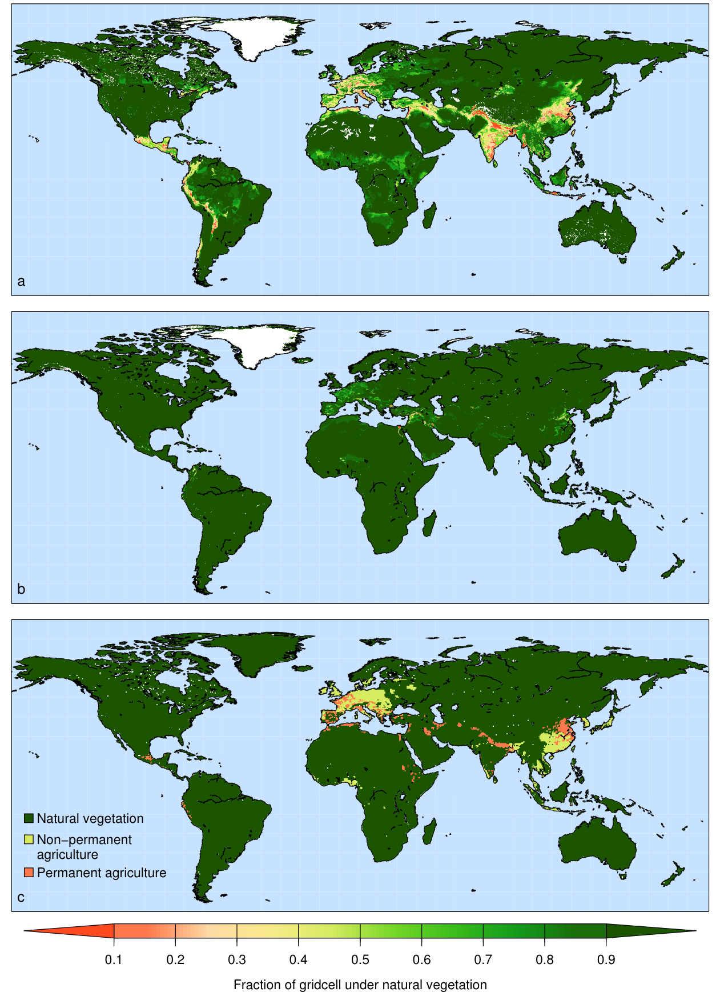
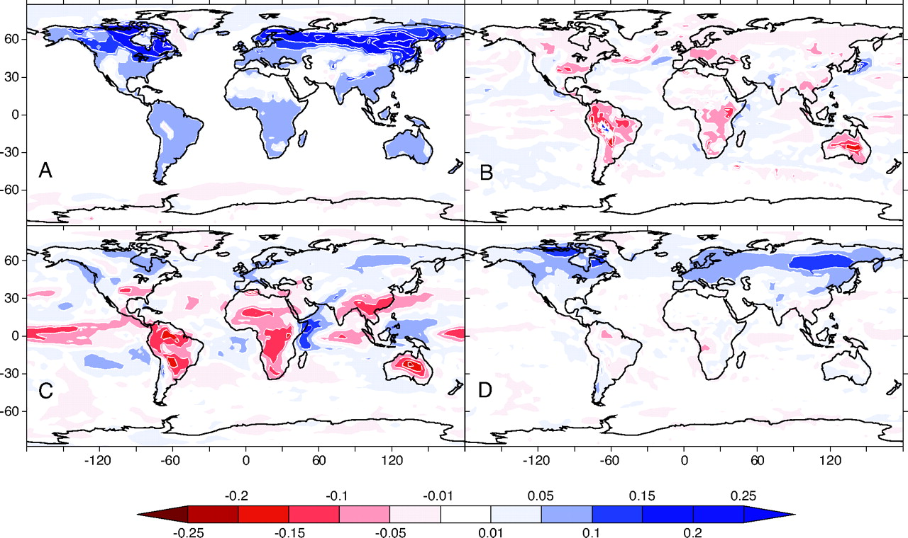
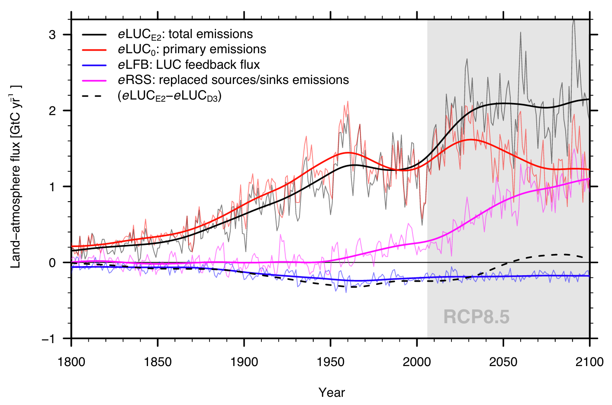
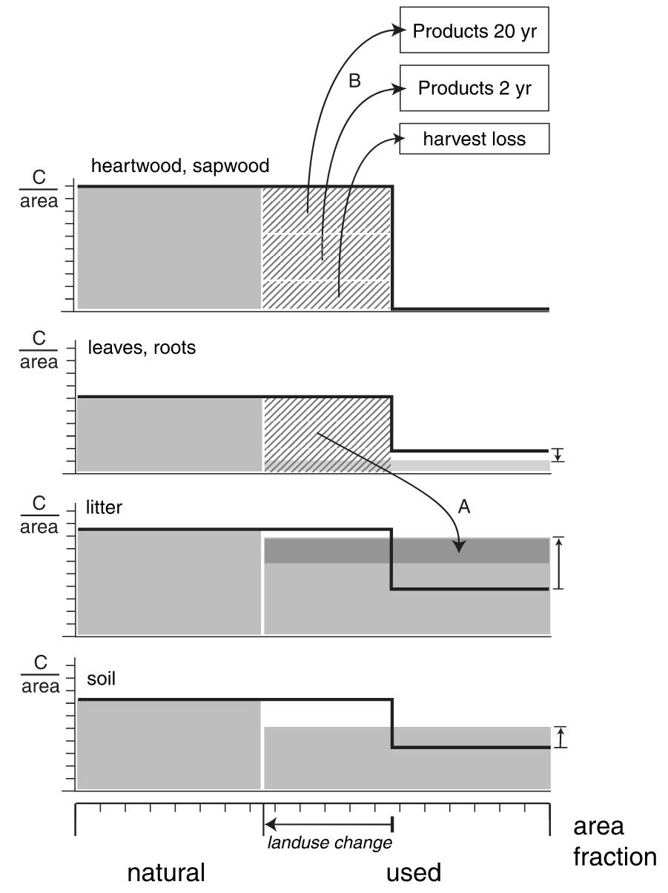

10 Land use change
10.1 Present-day distribution of agriculture
Agricultural activities account for the vast majority of surface area changed by humans. Currently (in the year 2000), there is about 15.0 (90% confidence range of 12.2–17.1) million km2 of cropland (12% of the Earth’s ice-free land surface) and 28.0 (90% confidence range of 23.6–30.0) million km2 of pasture (22% of the Earth’s ice-free land surface) (Ramankutty et al. 2008) (Figure 10.1). About 3 million km2 is irrigated, which is about 7% of the total agricultural land. In general, irrigation is used to enhance the productivity of crops in water-limited climates. These productivity enhancements are commonly by a factor of 2 or more (Siebert et al. 2015).
Croplands tend to be located in areas with fertile soils, and in climates that are moist enough to sustain rain-fed cultivation. Major cropland areas are found in the American mid-west, India, Europe, and Western Russia. Further important cropland areas are located in the rest of the Americas, Sub-Sahara Africa, (eastern) China, and Indonesia are less abundant but still present. In drier areas, the productivity of crops decreases, the labor input for irrigation increases, and therefore pastures are preferred. Therefore, pastures can be found in more arid regions, like the west of the USA, Patagonia, Australia, and the Tibetan Plateau in central Asia, and Eastern Africa. In other regions, pastures are limited to cool climates (e.g,. at high elevation).
The fraction of irrigated cropland is highest in (semi-)arid areas, like the Middle East or western South America, or in areas where rice is cultivated, like China and Japan (Ramankutty et al. 2008). Irrigation is accountable for the largest amount of anthropogenic freshwater use. Over the past century, and especially since the 1950s, the area of irrigated land in South and East Asia has increased tremendously, by a factor of 2-3. On the other hand, irrigation has decreased in Eastern Europe and Western Asia since the 1990s, which can be linked to the fall of the Soviet Union as well as to environmental degradation due to poor water management practices. Worldwide, the amount of irrigated land has more than quadrupled since the 1900s (Siebert et al. 2015).
10.2 Recent land use change
10.2.1 Global patterns
The global pattern of cropland and forest change in recent decades has been characterized by significant expansion of agricultural land, particularly in tropical regions, often at the expense of forested areas. This expansion is largely driven by the demand for agricultural products and economic incentives (Friedlingstein et al. 2024). Key crops contributing to this trend include soybeans in South America, oil palm in Southeast Asia, sugarcane in Brazil, and rice in various tropical regions. Other important crops such as cocoa, coffee, bananas, and tropical fruits also play a role, contributing to deforestation and biodiversity loss (Hansen et al. 2013; Pongratz et al. 2021; Potapov et al. 2022).
Deforestation rates have varied significantly across different regions (Figure 10.2). The Amazon, Indonesia and the Democratic Republic of the Congo have been major contributors to global deforestation, with Brazil experiencing high rates of deforestation linked to agricultural expansion. However, some regions have seen a decrease in deforestation rates, indicating a complex and region-specific pattern of forest change. Reductions of cropland areas between 2000 and 2019 are most common in the major agricultural region of the former Soviet Union. Brazil, particularly the Amazon rainforest, saw a major reversal in deforestation trends starting around 2004, thanks to stricter environmental laws, satellite monitoring, and sustainable land use policies. This led to a drop in deforestation from over 40,000 km2 per year in the early 2000s to under 20,000 km2 by 2010 - 2011. However, deforestation rates have risen again since 2018, with significant spikes in 2020 and 2021 due to policy changes, agricultural expansion, illegal logging, and land clearing. Ongoing monitoring is crucial to track these trends (Hansen et al. 2013).

From 2000 to 2012, a total of 2.3 million km2 of forest was lost globally, while 0.8 million km2 of new forest was established, indicating a net loss of forest cover (Hansen et al. 2013). This trend has led to substantial associated CO2 emissions, especially from carbon-dense forests, as agricultural production, particularly for cereals and oil crops, has intensified (Friedlingstein et al. 2024; Pongratz et al. 2021).
10.2.2 CO2 emissions
CO2 emissions from land use change have been substantial in recent decades, largely driven by deforestation and the conversion of forests and other natural ecosystems into agricultural land. These changes, particularly the clearing of carbon-dense tropical forests, have led to significant carbon losses. Estimates suggest that LUC has contributed approximately 10-25 % of global anthropogenic CO2 emissions (Friedlingstein et al. 2024). In recent decades, the gross emissions from LUC have remained relatively stable (Figure 10.3), with recent estimates showing gross annual emissions around 3.8 ± 0.6 PgC yr-1 between 2011 and 2020 (Pongratz et al. 2021). The overall trend in LUC emissions, however, shows a slight decline compared to earlier decades, reflecting efforts in land management and forest regrowth in some regions (Friedlingstein et al. 2024). Despite these efforts, LUC emissions remain a substantial part of global CO2 emissions

Deforestation remains the largest contributor, but other factors such as peatland degradation and land conversion to agriculture have also played important roles. While fossil fuel emissions have risen sharply, LUC continues to represent a major source of emissions, though its share has slightly declined in recent years (Friedlingstein et al. 2024).
By comparing estimates for current actual vegetation C stocks with C stocks under potential natural vegetation (Section 10.6), total land use change-induced C loss has been estimated at 447 PgC (Erb et al. 2018). This can be understood as being equal to the cumulative sum of related emissions since the advent of agriculture (Section 10.3). During the industrial period (1750-2023), cumulative emissions from land use change are estimated at 255 \(\pm\) 75 PgC (Table 3.2), which corresponds to around 34% of total industrial-era anthropogenic CO2 emissions, including emissions from fossil fuels.
10.3 Land use change since the Neolithic Revolution
10.3.1 Patterns in time and space
A sedentary lifestyle and the adoption of farming (the neolithic revolution) emerged independently in multiple centers on the different continents and spread to other regions over the course of the mid-to-late Holocene (Figure 10.4). Although diverse crops and livestock were domesticated across the different regions, the demand for agricultural land for crop cultivation and livestock grazing came at the expense of natural vegetation, and, with the expansion of agriculture into naturally forested regions, increasingly drove deforestation.

The extent of early agriculture and the timing of its expansion is subject to relatively large uncertainties. Reconstructions of cropland and pasture areas through time and space over the course of the pre-historical (and pre-industrial) Holocene are commonly based on reconstructions of regional population counts, assumptions regarding the per-capita land use, and constraints on the timing of the neolithic revolution from archaeological evidence (Harrison et al. 2020; B. Stocker et al. 2017). Improvements in land productivity through innovations in agriculture enabled a decline in per-capita land use over time (Boserup 1965; Mazoyer and Roudart 2006). Hence, the pre-industrial extent of land use likely is disproportionately large, considering the comparatively small human population numbers.

However, the extent of pre-industrial vs. industrial-era land use change is subject to large uncertainties, as indicated by contrasting recostructions (Figure 10.5). In particular, the extent of pre-Columbian land conversion in the Americas is poorly known, but could have been substantial as indicated by some archaeological and palaeobotanical evidence (Lewis and Maslin 2015). The fingerprint of human land cover change and deforestation is recorded, e.g., in lake sediments (Figure 2.27). The timing of charcoal counts and the switch from a dominance of tree pollen to cereal pollen can be interpreted as the consequence of local deforestation and increasing areas of crop cultivation (Gaillard et al. 2010). This information can be used as a constraint on reconstructions of croplands and pastures for the pre-industrial Holocene.
Land use intensification and cropland productivity increases enabled a decline of per-capita land use. This was also accompanied by a tendency towards increasingly shorter cultivation-fallow cycles and the replacement of shifting cultivation with increasingly permanent croplands (Boserup 1965; Mazoyer and Roudart 2006). Shifting cultivation with long rotation cycles is still practiced today in some tropical forest regions and causes particularly large impacts on the landscape, forest structure, and C stocks (Arneth et al. 2017).
10.3.2 Impact on the carbon cycle
The relatively large cumulative emissions from land use change (Section 10.2.2) and the disproportionate extent of pre-industrial vs. industrial-era agricultural expansion (Section 10.3.1) implies a substantial impact on the C cycle and atmospheric CO2 of the pre-industrial Holocene. However, C isotope-based reconstructions of the terrestrial C balance (Figure 3.3) indicate relatively small changes after the mid-Holocene - when agriculture spread across the continents. A detailed analysis of the timing multiple terrestrial C sources and sinks during the Holocene indicates that a planetary-scale impacts of human activities emerged only in the most recent centuries (B. Stocker et al. 2017). It also indicates that C sequestration northern peatlands that established and expanded after the onset of the Holocene is of an equal magnitude as the early-Holocene net terrestrial C balance and that substantial terrestrial C sources existed after the mid-Holocene.
10.4 Biogeophysical effects
Land use change affects the Earth system via two pathways. The net release of C contributes to CO2 accumulation in the atmosphere where it acts as a greenhouse gas and drives climate change (Chapter 9). This is referred to as the biogeochemical effect of land use change. In contrast, biogeophysical effects arise through changes in the energy and water exchange between the (altered) land surface and the atmosphere. These also affect near surface temperatures. The net effect of land use change on climate warming thus has to consider both biogeochemical and biogeophysical effects.
Biogeophysical effects arise mainly via two mechanisms. First, the replacement of forests with agricultural areas generally increases the surface albedo which acts to reflect more solar radiation (Figure 10.6 A). The albedo increase leads to a reduction in near-surface warming. In cold climates with seasonal snow cover, the albedo increase is amplified by the snow masking effect (Section 7.1.2). Hence, the deforestation of boreal forests can lead to a net cooling of the near-surface climate (even after accounting for the warming effect through biogeochemical changes) (Bala et al. 2007).

The second important mechanism of biogephysical effects of deforestation is the general decline in evapotranspiration (Figure 10.6 B) – especially in tropical regions. The decline in evapotranspiration is driven by the reduction of (transpiring) leaf area after the removal of trees. However, evapotranspiration recovers relatively quickly after disturbances - even in absence of full ecosystem recovery. However, the generally shallower rooting depth of grasses and crops in comparison to trees implies a more rapid decline of evapotranspiration during dry periods (Section 8.3.1). Moreover, the reduced aerodynamic resistance of (short-statured) grasses and crops in comparison to (tall) trees contributes to reduced turbulent heat fluxes and evapotranspiration (Figure 7.8). Hence, deforestation can lead to a long-term reduction of evapotranspiration on croplands and pastures.
Implications of reduced evapotranspiration on (local) climate are linked to the effects on the surface energy balance (Section 7.2) and boundary layer climate. Less evapotranspiration means less near-surface evaporative cooling and less moistening of the boundary layer. Particularly in the tropics, this leads to a reduction in cloud formation (Figure 10.6 C) and effects on the planetary albedo. High-altitude clouds normally reflect solar radiation and contribute to cooling the earth’s surface. The absence of clouds can lead to increased solar radiation on the ground and thus to greater warming (Bala et al. 2007).
Figure 10.6 D shows that the albedo change due to deforestation varies depending on the region. In boreal regions and higher latitudes, deforestation leads to a significantly higher albedo. In tropical regions, the albedo remains largely constant despite the brightening of the surface due to the reduction in evapotranspiration and cloud formation.
10.5 Direct and indirect effects on the carbon cycle
Land use change influences the carbon storage capacity in multiple, direct and indirect ways. The following components of land use change effects on the C cycle can be distinguished.
- Primary emissions: These consider the C loss caused by conversion of natural to agricultural land use without considering effects of and on climate and atmospheric CO2. Using Dynamic Global Vegetation Models, primary emissions can be computed by simulations where climate and atmospheric CO2 are held constant. Bookkeeping models yield primary emissions and do not, by design, consider additional components.
- Replaced sinks/sources: Conversion of natural to agricultural land use affects the C sink or source strength of an ecosystem under changing environmental conditions. Model simulations suggest that particularly tropical forests are an important C sink under rising CO2, while tropical croplands are not. This difference affects the global C budget (Section 3.3) and, following the simulation setup for Dynamic Global Vegetation Models used for its quantification (Friedlingstein et al. 2024), is commonly ascribed to land use emissions, the term \(E_\text{LUC}\) in the global C budget (Equation 3.6). The replaced sinks/sources flux can become a quantitatively important component of the effect of LUC on the C cycle, particularly in a future scenario where land conversion rates decline (and hence primary emissions decline), while atmospheric CO2 keeps rising (Figure 10.7).
- Land use feedback: The change in atmospheric CO2 and climate, caused by land use change (primary emissions) triggers effects on the C balance of the terrestrial biosphere. In model simulations, this effect leads to a reduction by around 20% of the net effect on atmospheric CO2 mainly through the fertilisation effect of the land use change-derived CO2 atmospheric CO2 increase (B. D. Stocker and Joos 2015). The land use feedback flux can only be separated from emission-driven simulations in coupled Earth System Models (where atmospheric CO2 is simulated interactively). The magnitude of the flux scales approximately in proportion to primary emissions.

10.6 Quantification methods
Three main methods for quantifying CO2 emissions from land use change can be distinguished.
- Remote sensing-based models: C stocks in aboveground biomass and land cover types can be estimated from remotely sensed information. Using additional information (for example about the delineation of protected areas), the potential natural vegetation (PNV) and its aboveground biomass stocks can be estimated across the globe (Erb et al. 2018). By comparing the PNV and actual aboveground biomass stocks, an estimate can be made for the cumulative loss of C from aboveground biomass, caused by anthropogenic land use and how it evolved until its present state. Additional assumptions about the relations of above to belowground biomass and soil C stocks enable an estimation of the cumulative land use change C emissions. This method does not generally enable the consideration of temporal dynamics in land use change and the emission rates per unit time. It also doesn’t account for delayed emission and uptake which may arise in view of the relatively long turnover times of C in soil and wood products. The advantage of remote sensing-based models is that they consider observations-informed C stock estimates and provide a spatially-explicit picture of land use change emissions.

- Bookkeeping models: Using information about country and sub-country-level forest area changes and forest C density (C stock per unit area in different ecoystem types, including forest, croplands, and pastures), bookkeeping models simulate the dynamics of biomass and soil C loss upon deforestation and harvesting and upon recovery after agricultural land abandonment. The basis for simulating these dynamics are empirical forest regrowth curves (Figure 5.14). Bookkeeping models do not resolve the spatial dimension, but do the accounting (“bookkeeping”) on the basis of political units at which forest areal data is provided. Bookeeping models also do not commonly consider the effects of environmental change on the C balance of forest and agricultural ecosystems. However, they do account for the full dynamics and the fate of C in different pools, considering also the the lifetime of wood products.
- Dynamic Global Vegetation Models (DGVMs): These models simulate the exchange of carbon, water, and energy between the land surface and the atmosphere by representing the CO2 uptake by photosynthesis, the dynamics along the C cascade Section 5.2, biogeophysical properties and processes. All processes are simulated dynamically over time and across a spatial grid that commonly spans the globe. DGVMs commonly represent multiple land portions within each gridcell, distinguishing natural vegetation, croplands, pastures, and built-up land. Land use change is implemented by dynamically altering the relative portions of these land use types. E.g., an expansion of the cropland portion at the expense of the natural vegetation portion would lead to a diversion of a corresponding fraction of the woody biomass C from the natural gridcell portion into litter pools and into wood product pools (Figure 10.9) from where the C is subject to further decay and emission as CO2. Conversely, abandonment of agricultural land is simulated as an expansion of the non-agricultural gridcell portion, enabling natural vegetation regrowth. In response, models then dynamically simulate (if the gridcell’s climate is suitable for tree establishment) forest regrowth and the accumulation of C in biomass stocks. Emissions attributed to land use change are then calculated as the difference of the net C balance (net biome productivity, NBP, see Section 5.1.7) between a simulation with dynamically changing land use change and a simulation where the distribution of land use is held constant. Depending on whether model forcings (climate, CO2) are temporally varying or not, indirect land use change effects on the carbon cycle are included in DGVM-based estimates or not (see Section 10.5).

10.7 The potential of forest regeneration and afforestation as climate mitigation
Forest regeneration and afforestation have a significant potential to sequester C over the coming decades at relatively low cost. The biophysical potential total carbon uptake is estimated to range between 72 PgC (Taylor and Marconi 2020) to 226 PgC (Mo et al. 2023). The large range of estimates is likely linked to differences in the consideration of soil C changes with varying tree cover and indicates a relatively large uncertainty in estimates. In addition, a holistic assessment of the potential of forest regeneration and afforestation as climate mitigation has to additionally consider biogeophysical effects (deforestation tends cool near surface air temperatures in some regions, Section 10.4), socio-economic constraints, and legal, political, and cultural aspects of human land use. The following points summarise these limitations:
- Land use conflict: The amount of land that can be dedicated to afforestation or regeneration is subject to competing land uses, including wood harvesting and other uses of forest products. Furthermore, global estimates (Mo et al. 2023) assume complete availability of extensively used lands for forest plantations (e.g., low-productivity grasslands currently used for ranging). The use of land for biomass C stock maximisation also creates a use conflict with land for bioenergy production.
- Water use conflict: Climate and soil conditions affect tree growth rates and carbon storage potential. Enhanced evapotranspiration on afforested land may lead to streamflow reductions and reduced water availability for human use, creating a water use conflict (Peng et al. 2024).
- Permanence and risk of disturbance: The potential carbon gains from regeneration and afforestation are at risk from natural disturbances such as wildfires, insect outbreaks, (Anderegg et al. 2020). Limited permanency of C (the turnover time of C in forest biomass is on the order of decades to centuries) indicates that forest regeneration and afforestation should not be used to compensate C released from fossil fuels where C had stored in organic matter for millions of years.
- Forest management and protection: Long-term permanency of C in afforestations and regenerated forests is subject to management practices and the long-term protection from logging and other human-induced disturbances. This implies that the economic, political, and legal context is critical for guaranteeing long-term permanency. However, such guarantees may not be given at the time when decisions about compensating C emissions fossil fuels are made.
- Delayed benefits: Forests take decades to centuries to reach their full potential C stocks (Figure 5.14). This implies a limited potential as a near-term (within the next 1-3 decades) climate mitigation solution at scale.